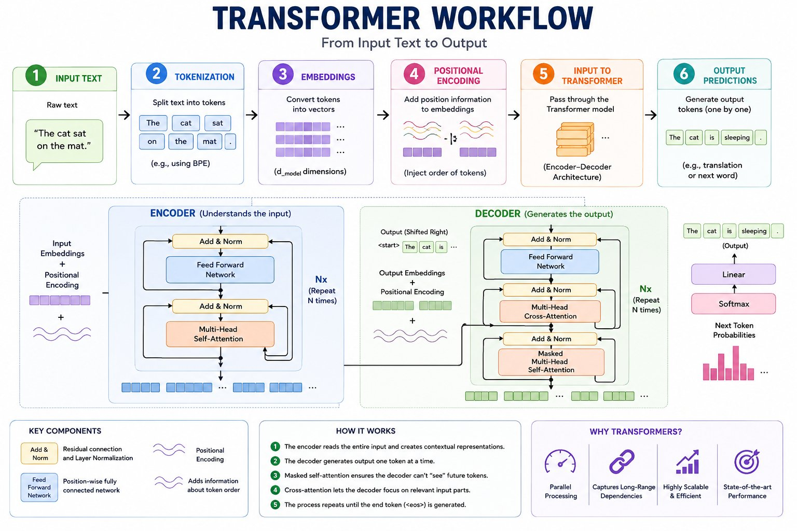
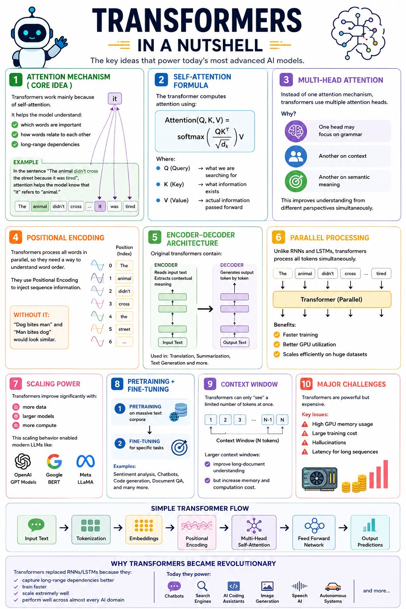

An interactive deep-dive into the architecture powering today's most advanced AI models — built for your CGAI certification exam.
The architecture that replaced RNNs and became the backbone of GPT, BERT, LLaMA and more.
Transformers are neural network architectures introduced in the 2017 paper "Attention Is All You Need". Instead of processing words one-by-one (like RNNs), they process all tokens in parallel and use a mechanism called self-attention to understand how words relate to each other — regardless of their distance in the sentence.
Transformers replaced RNNs/LSTMs because they capture long-range dependencies better, train faster with parallelism, and scale efficiently to billions of parameters.
| Feature | RNN | LSTM | Transformer |
|---|---|---|---|
| Parallel Processing | ✗ Sequential | ✗ Sequential | ✓ Fully Parallel |
| Long-Range Dependencies | ✗ Weak | ⚠ Limited | ✓ Excellent |
| Scalability | ✗ Poor | ✗ Poor | ✓ Highly Scalable |
| Training Speed | Slow | Slow | Fast (GPU-friendly) |
| Memory Usage | Low | Medium | High (O(n²) attention) |
| Position Awareness | Implicit | Implicit | Positional Encoding needed |
A chunk of text (word, subword, or character) that the model processes. "unhappy" → ["un", "happy"]
A dense vector that represents a token in high-dimensional space, capturing semantic meaning.
A mechanism to weigh how much each token should "pay attention" to every other token.
The maximum number of tokens a model can process at once (e.g., 128K for Claude).
Training on massive corpora to learn language patterns before task-specific fine-tuning.
Adapting a pre-trained model to a specific task (sentiment, QA, code) with labeled data.
From raw text to output — click each step to explore.
Everything starts with raw text. The model receives a string like: "The cat sat on the mat."
The model doesn't understand text — it needs to convert it into numbers. That's the job of the next steps.
"Translate English to French: The cat sat on the mat."
Text is split into tokens — sub-word units — using algorithms like Byte-Pair Encoding (BPE) or WordPiece.
Each unique token has an ID from a fixed vocabulary (e.g., 50,000 tokens).
["un", "happy", "ily"]["The", "cat", "sat", "on", "the", "mat", "."] → IDs: [464, 3797, 3332, 319, 262, 2603, 13]
Why sub-words? Handles unseen words ("photosynthesis" = ["photo","synthesis"]) while keeping vocabulary manageable.
Each token ID is mapped to a dense vector of size d_model (e.g., 512 or 768 dimensions) via a learned embedding matrix.
Similar meanings → similar vectors. The embedding captures semantic relationships.
king − man + woman ≈ queen[0.23, -0.47, 0.81, 0.12, ..., 0.55] (512 dimensions)[0.21, -0.44, 0.79, 0.15, ..., 0.52] ← very similar!
These vectors are the initial "understanding" of each word before any context is applied.
Transformers process all tokens at once (parallel), so they lose the notion of order. Positional Encoding injects position information into the embeddings.
The original paper uses sine and cosine functions of different frequencies:
The encoded vectors pass through stacked layers. Each layer has two core sub-modules:
Every token attends to every other token, computing relevance scores. Multiple "heads" look for different patterns simultaneously.
A position-wise fully-connected network (2 linear layers + ReLU) applied independently to each token after attention.
Both sub-modules use Residual Connections (Add) and Layer Normalization (Norm) to stabilize training. The whole block repeats N times (e.g., 6 or 96 layers).
The decoder's final hidden state passes through a Linear layer and then Softmax to produce a probability distribution over the vocabulary.
This autoregressive generation (one token at a time) is how GPT and similar models produce text.
The engine of Transformers — click a word to see how it attends to others.
Click any word to visualize which other words it "attends to" most strongly in context:
Sentence: "The animal didn't cross the street because it was too tired."
For each token, we compute Query (Q), Key (K), and Value (V) vectors from learned weight matrices:
The current token's "search query" — what it wants to find in other tokens.
Each token's "index" — a description of the information it holds.
The actual information to be passed forward, weighted by attention scores.
Instead of one attention mechanism, Transformers run h parallel attention heads on projected sub-spaces, then concatenate results.
Focuses on subject-verb agreement, sentence structure, and grammatical relationships.
Links pronouns to their antecedents — e.g., "it" → "animal" in our example above.
Captures thematic and semantic relationships between concepts across the sentence.
Later layers learn task-specific patterns (entity types, sentiment, factual associations).
How the two halves of the Transformer work together.
Translating "The cat is sleeping." (English → French):
| Attention Type | Where Used | Query from | Keys/Values from | Can See Future? |
|---|---|---|---|---|
| Self-Attention | Encoder | Encoder input | Encoder input | ✓ Yes (bidirectional) |
| Masked Self-Attention | Decoder | Decoder input | Decoder input | ✗ No (causal mask) |
| Cross-Attention | Decoder | Decoder state | Encoder output | N/A |
Each sub-layer output is added to its input (residual/skip connection) before normalization. This prevents vanishing gradients and allows training of very deep networks.
Normalizes activations across the feature dimension for each token independently. Stabilizes and speeds up training compared to batch normalization.
Two linear transformations with ReLU: FFN(x) = max(0, xW₁+b₁)W₂+b₂. Typically expands to 4× d_model internally (e.g., 512→2048→512).
Scaling, context windows, pre-training/fine-tuning, and challenges.
Model performance improves predictably with more data, parameters, and compute. This enabled GPT-4, Claude, Gemini etc.
Key formula: Loss ∝ N-α (where N = parameters)
Maximum tokens processable at once. Larger = better long-document understanding but higher memory cost (O(n²) attention computation).
GPT-3: 4K | GPT-4: 128K | Claude: 200K | Gemini: 1M+
Attention matrix is O(n²) — 1M token context needs ~4TB RAM naively
GPT-4 training estimated at $100M+. Inference at scale costs millions/month.
Models confidently generate plausible but factually wrong content.
Autoregressive decoding is sequential — each token requires a full forward pass.
Visual reference materials for exam study.

This diagram shows the complete 6-step pipeline: Input Text → Tokenization → Embeddings → Positional Encoding → Encoder–Decoder → Output Predictions. The lower half details the internal architecture of both the Encoder (with Multi-Head Self-Attention and FFN) and the Decoder (with Masked Self-Attention, Cross-Attention, and FFN). Note the residual connections (Add & Norm) around each sub-layer.

A comprehensive overview covering: (1) Attention Mechanism with the coreference example, (2) Self-Attention Formula Q/K/V, (3) Multi-Head Attention, (4) Positional Encoding, (5) Encoder–Decoder Architecture, (6) Parallel Processing advantages, (7) Scaling Power, (8) Pre-training + Fine-tuning, (9) Context Window, and (10) Major Challenges. Also includes the Simple Transformer Flow and Why Transformers Became Revolutionary.
Test your Transformer knowledge — 10 exam-style questions.